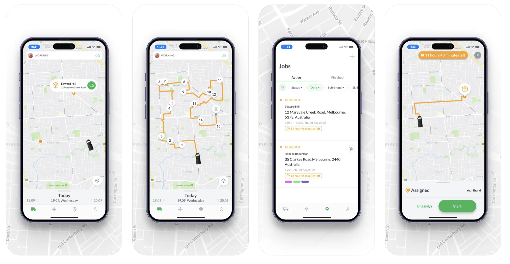
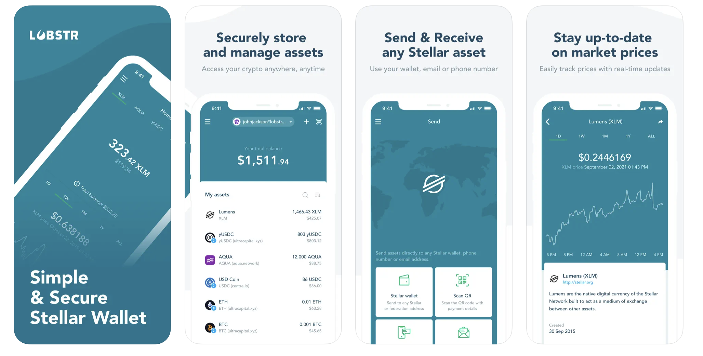
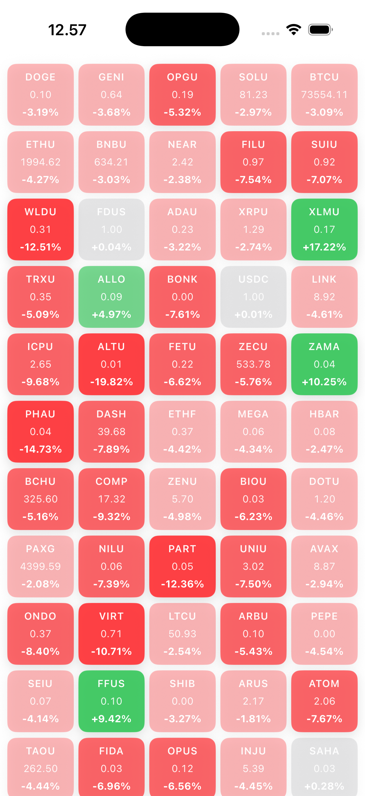

5+ Years Experience • Scalable Architecture • Web3, Fintech & Logistics Systems • AI-Augmented Development
I build high-performance iOS applications with full ownership — from architecture design to production scaling.
Mar 2019 – Dec 2024 • Remote
I worked as the primary iOS engineer responsible for designing, building, and scaling production-grade mobile systems across fintech, Web3, and logistics domains. I owned architecture decisions end-to-end and collaborated closely with product, backend, and design teams to deliver high-performance applications at scale.
System Ownership & Architecture
• Designed and evolved modular iOS architectures using MVVM-C and TCA-inspired patterns
• Refactored legacy codebases into scalable, testable, and maintainable systems
• Applied SOLID principles and separation of concerns to reduce long-term engineering complexity
Web3 & Fintech Systems
• Built secure crypto wallet and payment flows for Stellar-based Web3 applications
• Integrated blockchain SDKs and financial APIs for asset management and transactions
• Focused on security-first engineering using Keychain, secure storage, and safe network layers
Logistics & Real-Time Systems
• Developed real-time driver tracking and logistics coordination platform (Uber-like system)
• Implemented live job dispatching, navigation workflows, and customer notification systems
• Optimized real-time updates and background performance for production reliability
Performance & Engineering Impact
• Increased delivery velocity by ~15% by adopting Swift Concurrency (async/await) and Combine
• Reduced crash rate and production bugs by ~15% through architecture refactoring
• Improved user retention by ~35% through UX engineering collaboration
• Increased app stability in high-traffic environments by ~25% via production debugging & monitoring
Engineering Practices
• Worked in CI/CD environments using Bitrise for automated builds and deployments
• Collaborated across product and design teams to align technical constraints with UX goals
• Actively participated in debugging, performance profiling, and release stabilization cycles
Bachelor — Electronic Security Systems (2012 – 2020)
Email: yourmail@example.com
GitHub: https://github.com/KlinovK
LinkedIn: linkedin.com/in/yourname
Telegram: https://lnkd.in/gasrZCeh
Uber-like driver tracking system for real-time job management, navigation, and customer notifications.
Swift • RxSwift • MVVM • Alamofire • Promise • Bitrise

Secure blockchain wallet for managing Stellar assets, tokens, and transactions.
Swift • Objective-C • VIPER • NSURLSession • Bitrise

Crypto tracking app for monitoring assets and market trends.
Swift • MVVM • CoreData • Moya
High-performance real-time market tracker using WebSockets and Swift Concurrency.
SwiftUI • WebSockets • async/await • TCA-inspired architecture
GitHub
Task system with priority inheritance & cancellation propagation.
GitHub